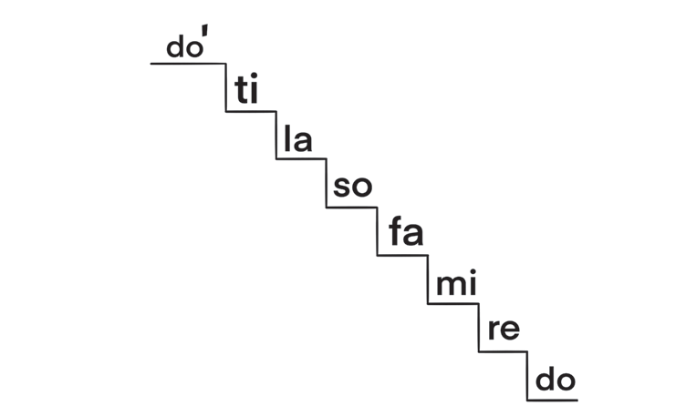
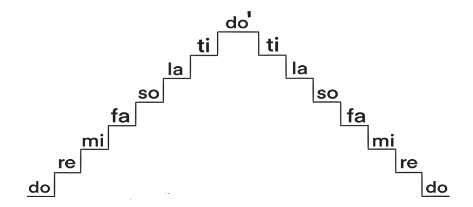

When the arrangement of notes starts from high to low, the solfa syllables are do' ti la so fa mi re do. Figure 3. Shows the major scale in descending order.

Figure 3:Major scale in descending order
Moreover, these notes can be sung in ascending and descending order as shown in Figure 4.

Figure. 4:Major scale in ascending and descending order
When the arrangement of notes starts from high to low, the solfa syllables are do' ti la so fa mi re do.Figure 3 presents the major scale in descending order.Major scale going down in steps: do', ti, la, so, fa, mi, re, do.Figure 3: Major scale in descending orderMoreover, these notes can be sung in ascending and descending order as shown in Figure 4.Major scale going up and down in steps: do, re, mi, fa, so, la, ti, do', ti, la, so, fa, mi, re, do.Figure. 4: Major scale in ascending and descending order